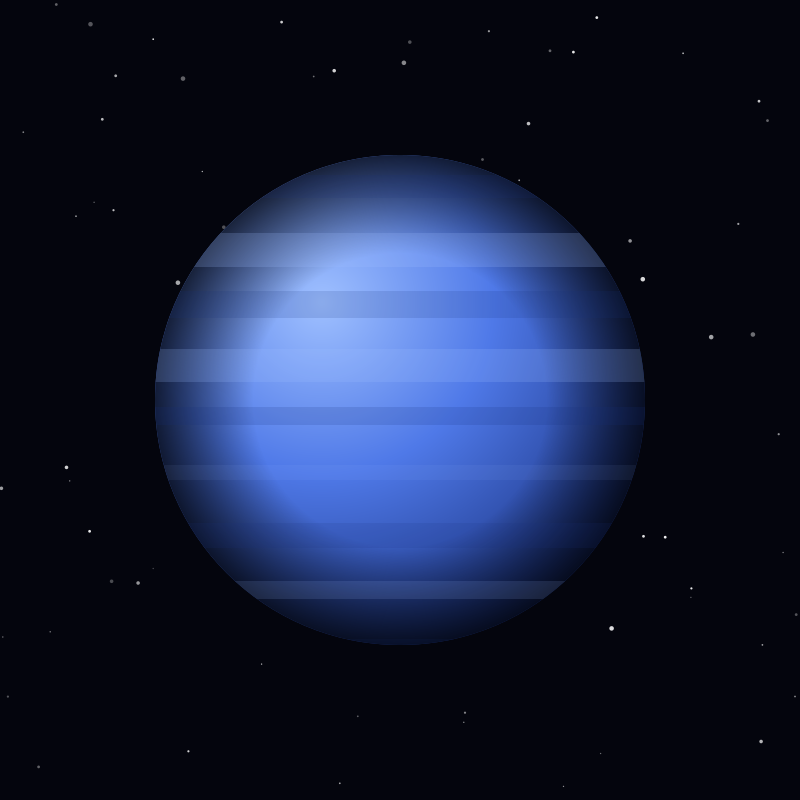

Planet
Neptune
The farthest planet from the Sun, a deep-blue ice giant driven by the fastest winds measured on any planet.
Object 14 of 26

Key facts
- Distance from Earth
- 4.5 billion km
- Radius
- 24,622 km
- Mass
- 1.02 × 10²⁶ kg
- Surface gravity
- 11.15 m/s²
- Orbital period
- 165 years
- Wind speed
- Up to 2,100 km/h
- Atmosphere
- Hydrogen, helium, methane
- Known moons
- 16
Overview
Neptune is the eighth and farthest planet from the Sun, orbiting at 30 astronomical units. It takes 165 years to complete a single circuit, so it has completed only one full orbit since its discovery in 1846.
It was the first planet found by prediction rather than observation. Urbain Le Verrier calculated where an unseen world must be disturbing Uranus's orbit; Johann Galle pointed a telescope at that spot the very next night and found Neptune within a degree of the prediction.
Winds & Weather
Neptune has the fastest winds measured on any planet, reaching about 2,100 kilometres per hour — supersonic relative to the local speed of sound. How it generates so much storm power so far from the Sun is still not well understood.
Despite receiving 900 times less sunlight than Earth, Neptune radiates 2.6 times the energy it receives, suggesting heat left over from its formation is still escaping. Voyager 2 photographed the Great Dark Spot, an Earth-sized storm, in 1989; when Hubble looked a few years later it had gone, and new storms had appeared elsewhere.
Triton & Rings
Neptune has 16 known moons, dominated by Triton, which orbits backwards — a sign it was captured from the Kuiper Belt rather than forming in place. Five faint rings encircle the planet, some gathered into clumps nicknamed 'arcs'.
Triton's retrograde orbit is slowly draining its energy. In roughly 3.6 billion years the moon will spiral inside the Roche limit, where Neptune's tides will tear it apart into a temporary ring system.
Exploration
Voyager 2 flew past Neptune on 25 August 1989, the last planet visited on the grand tour of the outer solar system. It discovered six moons and the ring arcs, and measured the magnetic field in a single eight-hour window.
No spacecraft has returned since. A proposed Neptune Orbiter would study Triton's potential subsurface ocean, the ring system and the planet's internal heat in detail no flyby can match.